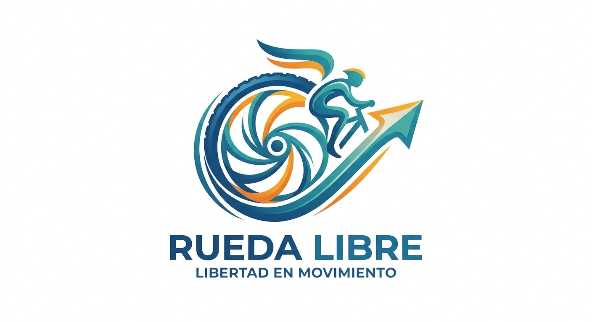
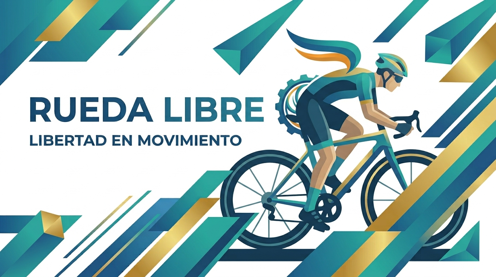
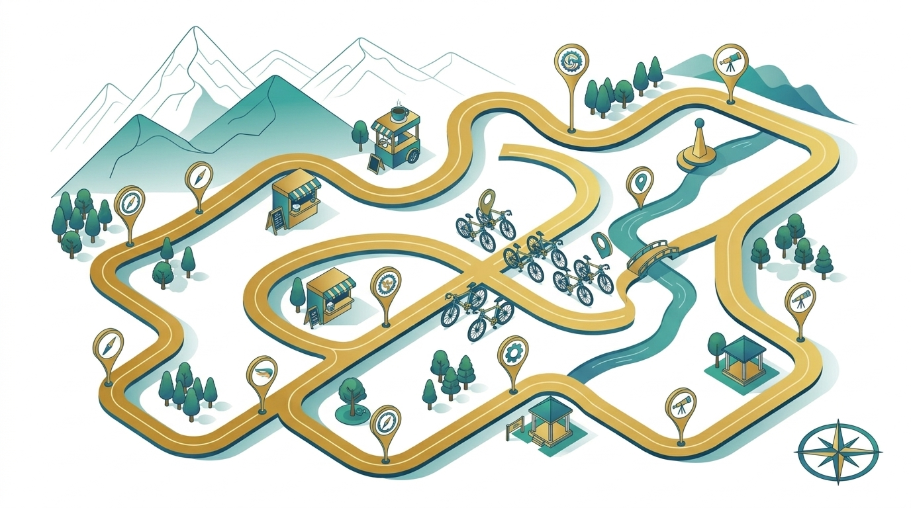
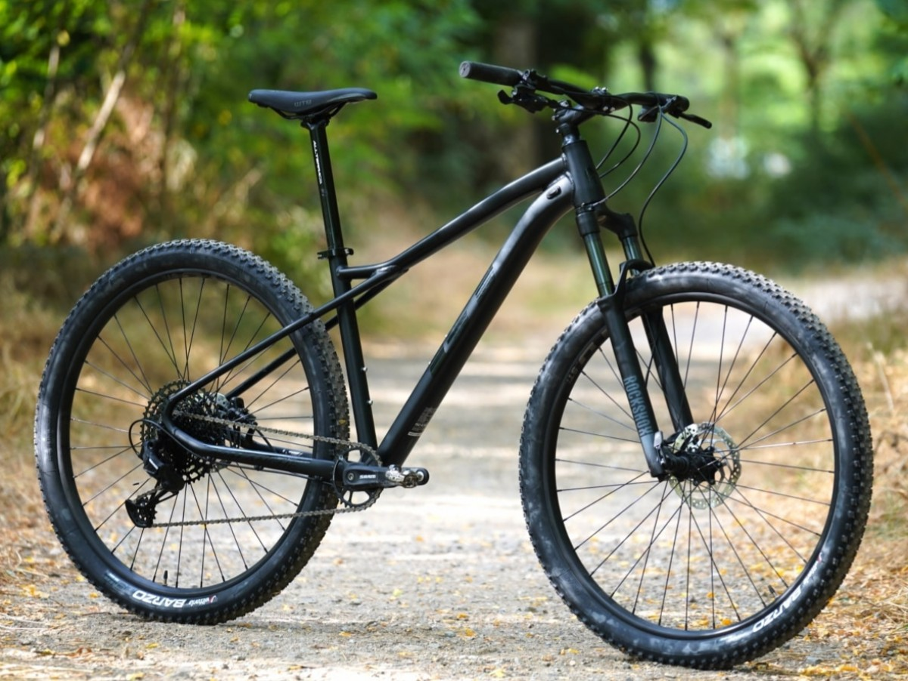

Bienvenidos a Rueda libre, un lugar lleno de bicicletas
Somos una empresa de alquiler de bicicletas en Medellín, comprometida a ofrecer una experiencia única de exploración urbana.

Ofrecemos una amplia variedad de bicicletas para satisfacer las necesidades de nuestros clientes, desde bicicletas de montaña hasta bicicletas eléctricas.
Tarifas
Para alquilar una bicicleta, simplemente acércate a cualquiera de nuestros puntos de alquiler y muestra tu identificación. Te guiaremos para seleccionar la bicicleta que mejor se adapte a tus necesidades.

Estamos ubicados en el corazón de Medellín, fácilmente accesible por transporte público o en coche.
Para más información, puedes contactarnos a través de los siguientes enlaces:
De prueba